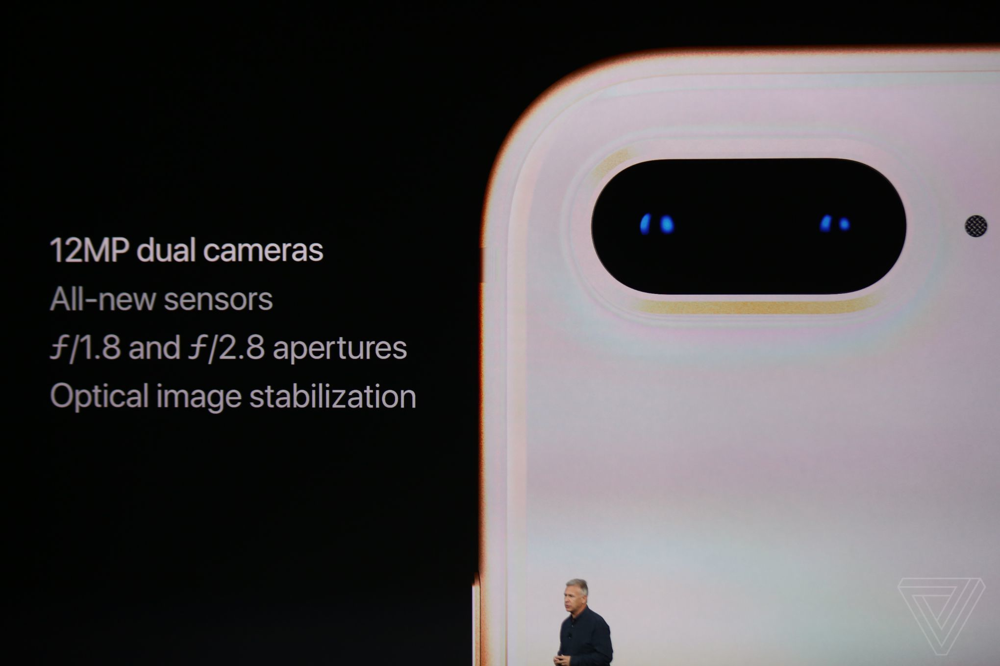

Được phát hành vào ngày 22/9, iPhone 8 Plus là chiếc điện thoại thứ tư của táo khuyết sở hữu màn hình 5,5 inch. Trước đó là iPhone 6 Plus (2014), iPhone 6s Plus (2015), và iPhone 7 Plus (2016). Một số người kỳ vọng iPhone 8 Plus sẽ mỏng hơn những người tiền nhiệm. Tuy nhiên thực tế cho thấy đây là mẫu iPhone nặng nhất từ trước đến nay.
iPhone 8 có bộ khung bằng thép và đồng, có ốp thêm mặt kính siêu bền để hỗ trợ tính năng sạc không dây - lần đầu tiên xuất hiện trên sản phẩm điện thoại của Táo. Màn hình của thế hệ iPhone 8/8 Plus này đã được thêm tính năng TrueTone để điều chỉnh màu sắc tuỳ vào cường độ ánh sáng của môi trường. Nó cũng có hệ thống loa stereo được cải tiến để âm thanh phát ra to hơn 25%, đồng thời âm bass cũng trầm hơn.
Hệ thống camera trên iPhone 8 Plus được cải tiến, sử dụng cảm biến ảnh mới, khẩu độ ống kính wide là F/1.8 còn ống tele là F/2.8, trang bị hệ thống chống rung quang học OIS.